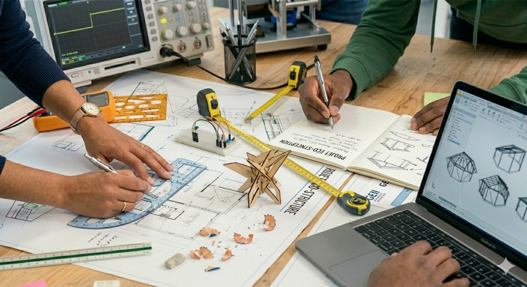
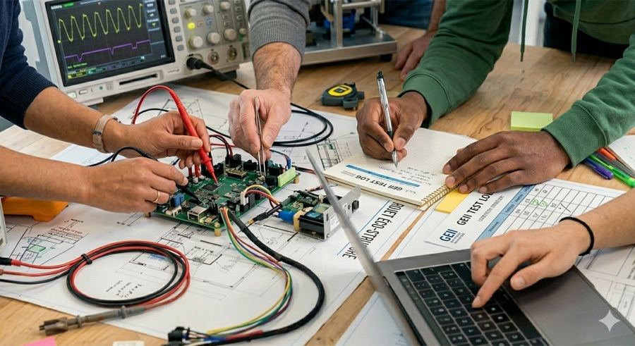

Semestre 1 · 6 apprentissages critiques validés
C1 · C2
C1
Concevoir la partie GEII d'un système
Niveau 1 · S1
C2
Vérifier la partie GEII d'un système
Niveau 1 · S1
C3
Assurer le maintien en condition opérationnelle d'un système
À venir · S2
C4
Installer tout ou partie d'un système de production, de conversion et de gestion d'énergie sur site
À venir · S2